2026 Advanced Higher Physics marking instructions
Source: Scottish Qualifications Authority (SQA) / Qualifications Scotland. This is a StemInteract HTML companion, not an official HTML edition. Selectable text is supplied alongside original page images. Use the images or original PDF for equations, powers, fractions, vector notation, tables and diagrams; text extraction cannot fully preserve mathematical layout.
Jump to a question
PDF page 1
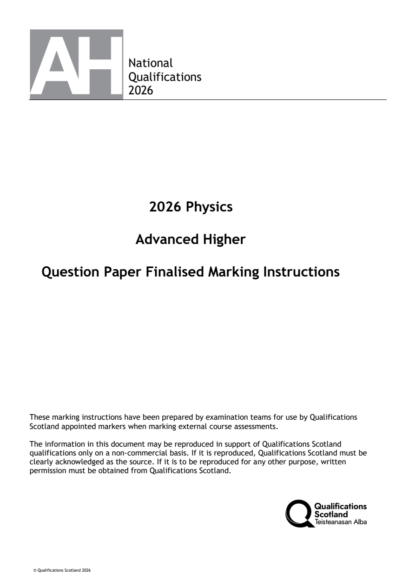
Selectable page text
National
Qualifications
2026
2026 Physics
Advanced Higher
Question Paper Finalised Marking Instructions
These marking instructions have been prepared by examination teams for use by Qualifications
Scotland appointed markers when marking external course assessments.
The information in this document may be reproduced in support of Qualifications Scotland
qualifications only on a non-commercial basis. If it is reproduced, Qualifications Scotland must be
clearly acknowledged as the source. If it is to be reproduced for any other purpose, written
permission must be obtained from Qualifications Scotland.
© Qualifications Scotland 2026PDF page 2
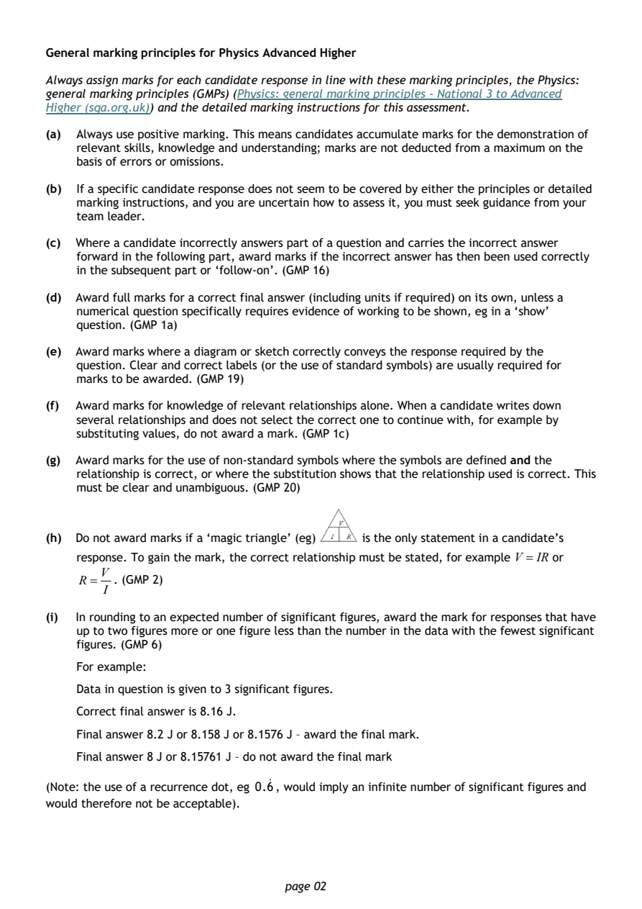
Selectable page text
General marking principles for Physics Advanced Higher
Always assign marks for each candidate response in line with these marking principles, the Physics:
general marking principles (GMPs) (Physics: general marking principles - National 3 to Advanced
Higher (sqa.org.uk)) and the detailed marking instructions for this assessment.
(a) Always use positive marking. This means candidates accumulate marks for the demonstration of
relevant skills, knowledge and understanding; marks are not deducted from a maximum on the
basis of errors or omissions.
(b) If a specific candidate response does not seem to be covered by either the principles or detailed
marking instructions, and you are uncertain how to assess it, you must seek guidance from your
team leader.
(c) Where a candidate incorrectly answers part of a question and carries the incorrect answer
forward in the following part, award marks if the incorrect answer has then been used correctly
in the subsequent part or ‘follow-on’. (GMP 16)
(d) Award full marks for a correct final answer (including units if required) on its own, unless a
numerical question specifically requires evidence of working to be shown, eg in a ‘show’
question. (GMP 1a)
(e) Award marks where a diagram or sketch correctly conveys the response required by the
question. Clear and correct labels (or the use of standard symbols) are usually required for
marks to be awarded. (GMP 19)
(f) Award marks for knowledge of relevant relationships alone. When a candidate writes down
several relationships and does not select the correct one to continue with, for example by
substituting values, do not award a mark. (GMP 1c)
(g) Award marks for the use of non-standard symbols where the symbols are defined and the
relationship is correct, or where the substitution shows that the relationship used is correct. This
must be clear and unambiguous. (GMP 20)
(h) Do not award marks if a ‘magic triangle’ (eg) is the only statement in a candidate’s
response. To gain the mark, the correct relationship must be stated, for example V = IR or
V
R = . (GMP 2)
I
(i) In rounding to an expected number of significant figures, award the mark for responses that have
up to two figures more or one figure less than the number in the data with the fewest significant
figures. (GMP 6)
For example:
Data in question is given to 3 significant figures.
Correct final answer is 8.16 J.
Final answer 8.2 J or 8.158 J or 8.1576 J – award the final mark.
Final answer 8 J or 8.15761 J – do not award the final mark
(Note: the use of a recurrence dot, eg 0.6, would imply an infinite number of significant figures and
would therefore not be acceptable).
page 02PDF page 3
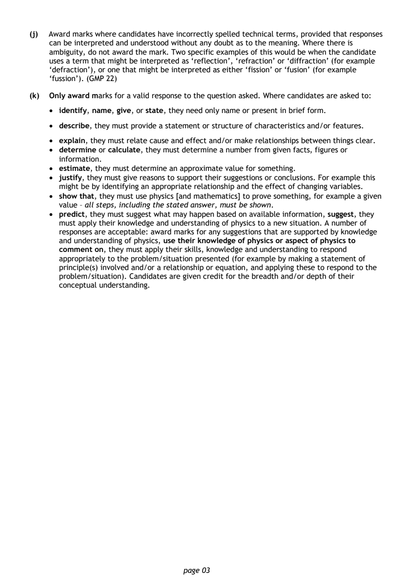
Selectable page text
(j) Award marks where candidates have incorrectly spelled technical terms, provided that responses
can be interpreted and understood without any doubt as to the meaning. Where there is
ambiguity, do not award the mark. Two specific examples of this would be when the candidate
uses a term that might be interpreted as ‘reflection’, ‘refraction’ or ‘diffraction’ (for example
‘defraction’), or one that might be interpreted as either ‘fission’ or ‘fusion’ (for example
‘fussion’). (GMP 22)
(k) Only award marks for a valid response to the question asked. Where candidates are asked to:
• identify, name, give, or state, they need only name or present in brief form.
• describe, they must provide a statement or structure of characteristics and/or features.
• explain, they must relate cause and effect and/or make relationships between things clear.
• determine or calculate, they must determine a number from given facts, figures or
information.
• estimate, they must determine an approximate value for something.
• justify, they must give reasons to support their suggestions or conclusions. For example this
might be by identifying an appropriate relationship and the effect of changing variables.
• show that, they must use physics [and mathematics] to prove something, for example a given
value – all steps, including the stated answer, must be shown.
• predict, they must suggest what may happen based on available information, suggest, they
must apply their knowledge and understanding of physics to a new situation. A number of
responses are acceptable: award marks for any suggestions that are supported by knowledge
and understanding of physics, use their knowledge of physics or aspect of physics to
comment on, they must apply their skills, knowledge and understanding to respond
appropriately to the problem/situation presented (for example by making a statement of
principle(s) involved and/or a relationship or equation, and applying these to respond to the
problem/situation). Candidates are given credit for the breadth and/or depth of their
conceptual understanding.
page 03PDF page 4
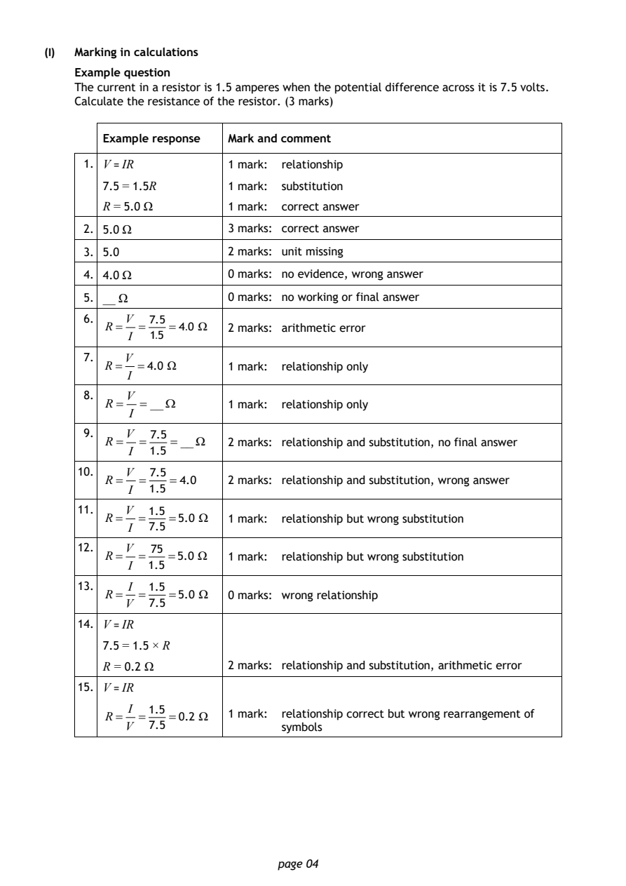
Selectable page text
(l) Marking in calculations
Example question
The current in a resistor is 1.5 amperes when the potential difference across it is 7.5 volts.
Calculate the resistance of the resistor. (3 marks)
Example response Mark and comment
1. V = IR 1 mark: relationship
7.5 = 1.5R 1 mark: substitution
R = 5.0 Ω 1 mark: correct answer
2. 5.0 Ω 3 marks: correct answer
3. 5.0 2 marks: unit missing
4. 4.0 Ω 0 marks: no evidence, wrong answer
5. __ Ω 0 marks: no working or final answer
6. V 7.5
R= = =4.0 Ω 2 marks: arithmetic error
I 1.5
7. V
R= =4.0 Ω 1 mark: relationship only
I
8. V
R= = __Ω 1 mark: relationship only
I
9. V 7.5
R= = = __Ω 2 marks: relationship and substitution, no final answer
I 1.5
10. V 7.5
R= = =4.0 2 marks: relationship and substitution, wrong answer
I 1.5
11. V 1.5
R= = =5.0 Ω 1 mark: relationship but wrong substitution
I 7.5
12. V 75
R= = =5.0 Ω 1 mark: relationship but wrong substitution
I 1.5
13. I 1.5
R= = =5.0 Ω 0 marks: wrong relationship
V 7.5
14. V = IR
7.5 = 1.5 × R
R = 0.2 Ω 2 marks: relationship and substitution, arithmetic error
15. V = IR
I 1.5
R= = =0.2 Ω 1 mark: relationship correct but wrong rearrangement of
V 7.5 symbols
page 04PDF page 5
Question 1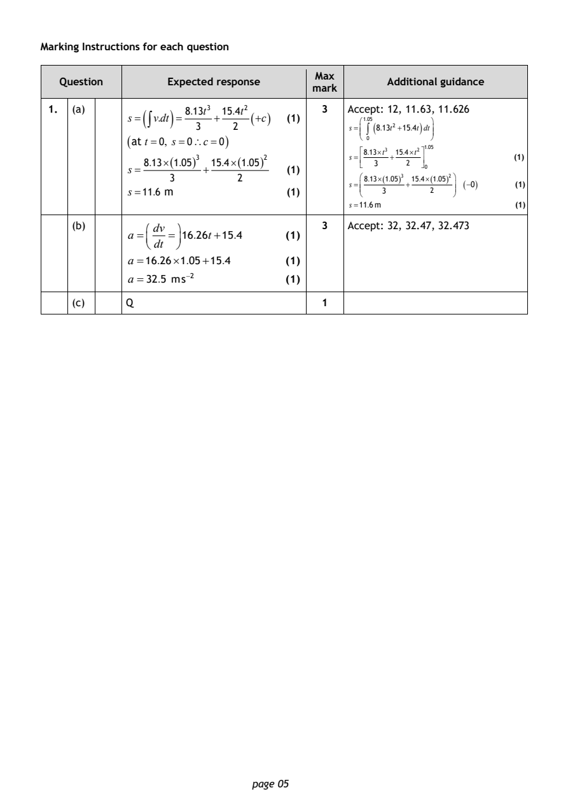
Selectable page text
Marking Instructions for each question
Max
Question Expected response Additional guidance
mark
1. (a) ( ) 8.13t³ 15.4t² 3 Accept: 12, 11.63, 11.626
s= ∫v.dt = + (+c) (1)
1.05
3 2 s= ∫ (8.13t²+15.4t)dt
(at t =0, s=0∴c=0) 0
5
8.13×t³ 15.4×t²¹^{.}⁰
8.13×(1.05)³ 15.4×(1.05)² s=
3
+
2
(1)
s= + (1) 0
3 2 8.13×(1.05)³ 15.4×(1.05)²
s= + (−0) (1)
s=11.6 m (1) 3 2
s=11.6m (1)
(b) dv 3 Accept: 32, 32.47, 32.473
a = = 16.26t+15.4 (1)
dt
a =16.26×1.05+15.4 (1)
a =32.5 ms⁻² (1)
(c) Q 1
page 05PDF page 6
Question 2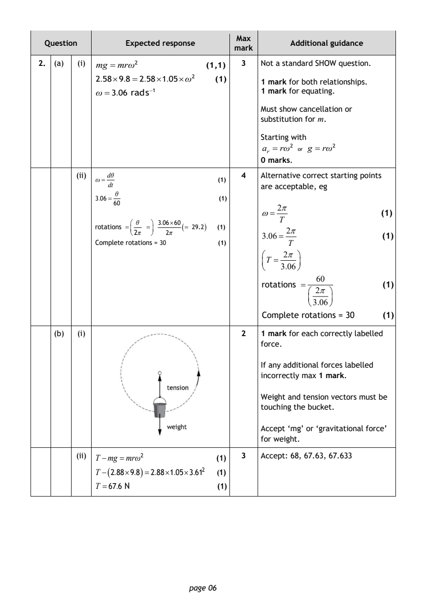
Selectable page text
Max
Question Expected response Additional guidance
mark
2. (a) (i) mg =mrω² (1,1) 3 Not a standard SHOW question.
2.58×9.8=2.58×1.05×ω² (1)
1 mark for both relationships.
ω=3.06 rads⁻¹ 1 mark for equating.
Must show cancellation or
substitution for m.
Starting with
aᵣ =rω² g =rω²
or
0 marks.
(ii) dθ 4 Alternative correct starting points
ω= (1)
dt are acceptable, eg
θ
3.06= (1)
60
2π
ω= (1)
T
θ 3.06×60
rotations = = (= 29.2) (1)
2π
2π 2π 3.06= (1)
Complete rotations = 30 (1) T
2π
T =
3.06
60
rotations = (1)
2π
3.06
Complete rotations = 30 (1)
(b) (i) 2 1 mark for each correctly labelled
force.
If any additional forces labelled
incorrectly max 1 mark.
Weight and tension vectors must be
touching the bucket.
Accept ‘mg’ or ‘gravitational force’
for weight.
(ii) T −mg =mrω² (1) 3 Accept: 68, 67.63, 67.633
T −(2.88×9.8)=2.88×1.05×3.61² (1)
T =67.6 N (1)
page 06PDF page 7
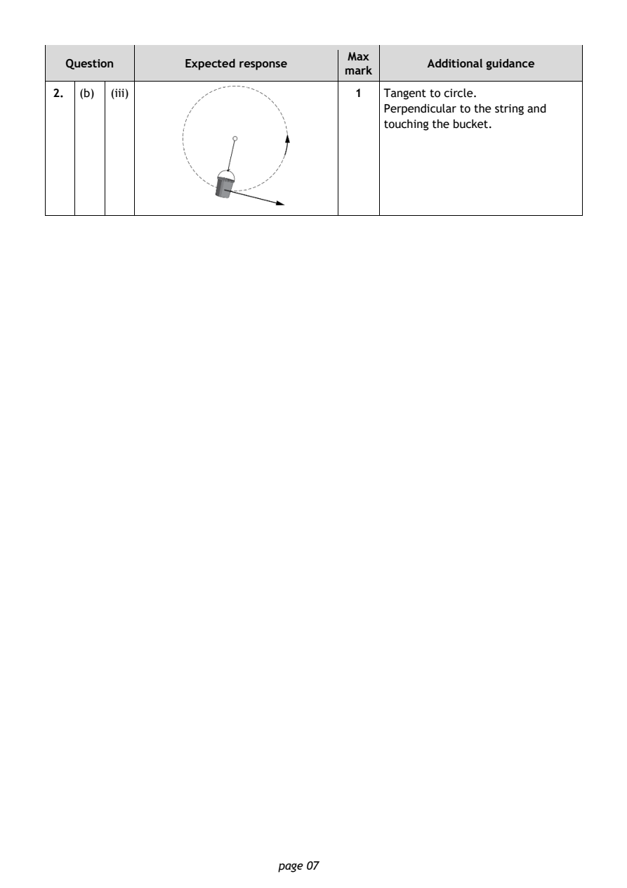
Selectable page text
Max
Question Expected response Additional guidance
mark
2. (b) (iii) 1 Tangent to circle.
Perpendicular to the string and
touching the bucket.
page 07PDF page 8
Question 3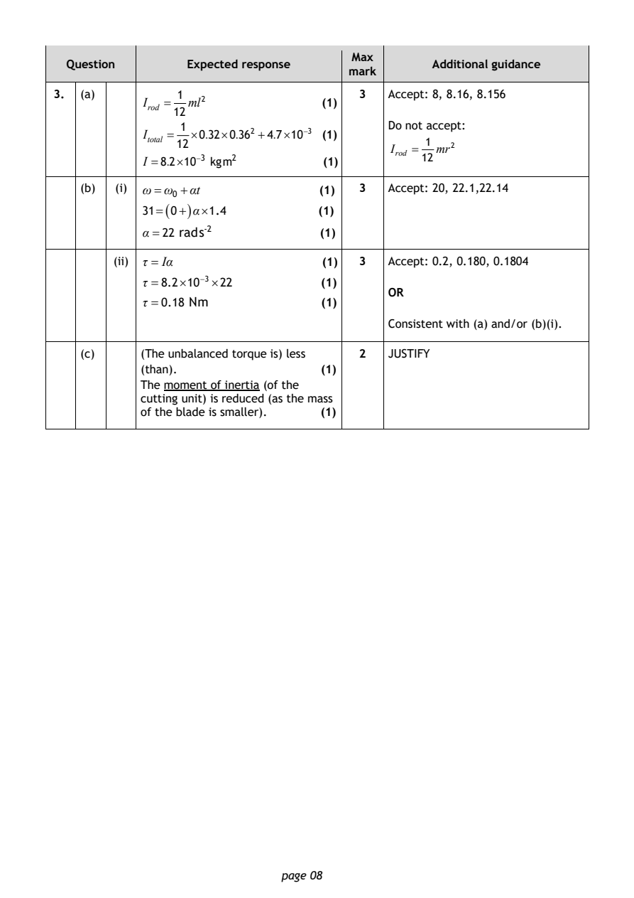
Selectable page text
Max
Question Expected response Additional guidance
mark
3. (a) 1 3 Accept: 8, 8.16, 8.156
Iᵣₒ_{d} = ml² (1)
12
1 Do not accept:
Iₜₒₜₐₗ = ×0.32×0.36² +4.7×10⁻³ (1)
12 1
Iᵣₒ_{d} = mr²
I =8.2×10⁻³ kgm² (1)
12
(b) (i) ω=ω₀ +αt (1) 3 Accept: 20, 22.1,22.14
31=(0+)α×1.4 (1)
α =22 rads⁻² (1)
(ii) τ = Iα (1) 3 Accept: 0.2, 0.180, 0.1804
τ =8.2×10⁻³×22 (1)
OR
τ =0.18 Nm (1)
Consistent with (a) and/or (b)(i).
(c) (The unbalanced torque is) less 2 JUSTIFY
(than). (1)
The moment of inertia (of the
cutting unit) is reduced (as the mass
of the blade is smaller). (1)
page 08PDF page 9
Question 4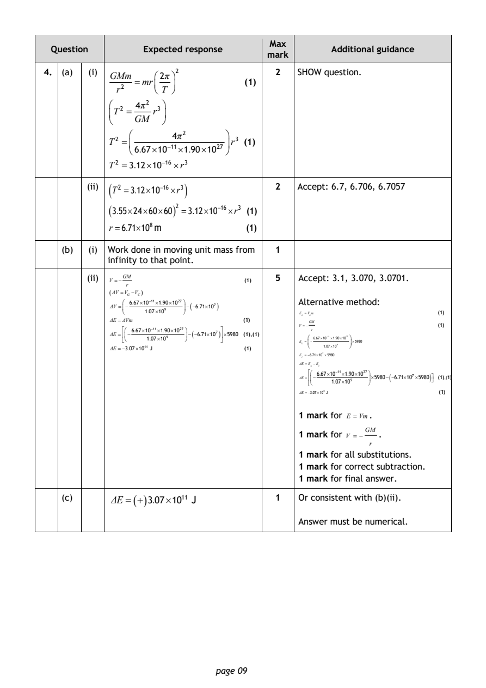
Selectable page text
Max
Question Expected response Additional guidance
mark
4. (a) (i) 2 SHOW question.
GMm 2π²
=mr (1)
r² T
4π²
T² = r³
GM
4π²
T² = r³ (1)
6.67×10⁻¹¹×1.90×10²⁷
T² =3.12×10⁻¹⁶×r³
(ii) ( ) 2 Accept: 6.7, 6.706, 6.7057
T² =3.12×10⁻¹⁶×r³
(3.55×24×60×60)² =3.12×10⁻¹⁶×r³ (1)
r=6.71×10⁸m (1)
(b) (i) Work done in moving unit mass from 1
infinity to that point.
(ii) _{V} GM 5 Accept: 3.1, 3.070, 3.0701.
=− (1)
r
(ΔV=V_{G}−V_{C})
ΔV= − 6.67×10⁻¹¹×1.90×10²⁷ −(−6.71×10⁷) Alternative method:
1.07×10⁹ E_{G}=V_{G}m (1)
ΔE=ΔVm (1) V=− GM (1)
ΔE= − 6.67×1 1 0 .0 ⁻¹ 7 ¹× × 1 1 . 0 9 ⁹ 0×10²⁷ −(−6.71×10⁷) ×5980 (1),(1) E_{G}= − r 6.67×10⁻¹¹×1.90×10²⁷ ×5980
ΔE=−3.07×10¹¹ J (1) 1.07×10⁹
E_{C}=−6.71×10⁷×5980
ΔE=E_{G}−E_{C}
ΔE= − 6.67×1 1 0 .0 ⁻¹ 7 ¹ × ×1 10 .9 ⁹ 0×10²⁷ ×5980−(−6.71×10⁷×5980) (1),(1)
ΔE=−3.07×10¹¹J (1)
1 mark for E =Vm.
GM
1 mark for V = − .
r
1 mark for all substitutions.
1 mark for correct subtraction.
1 mark for final answer.
(c) ΔE =(+)3.07×10¹¹ J 1 Or consistent with (b)(ii).
Answer must be numerical.
page 09PDF page 10
Question 5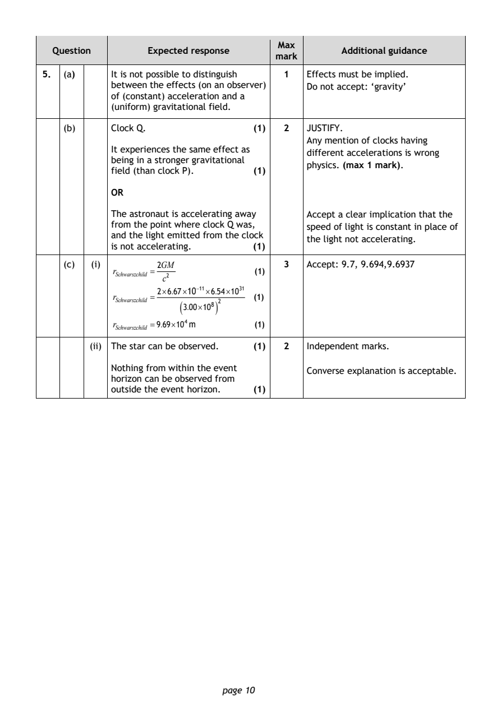
Selectable page text
Max
Question Expected response Additional guidance
mark
5. (a) It is not possible to distinguish 1 Effects must be implied.
between the effects (on an observer) Do not accept: ‘gravity’
of (constant) acceleration and a
(uniform) gravitational field.
(b) Clock Q. (1) 2 JUSTIFY.
Any mention of clocks having
It experiences the same effect as
different accelerations is wrong
being in a stronger gravitational
physics. (max 1 mark).
field (than clock P). (1)
OR
The astronaut is accelerating away Accept a clear implication that the
from the point where clock Q was, speed of light is constant in place of
and the light emitted from the clock
the light not accelerating.
is not accelerating. (1)
(c) (i) 2GM 3 Accept: 9.7, 9.694,9.6937
r_{S}_{c}ₕ_{w}ₐᵣ = (1)
szchild c²
2×6.67×10⁻¹¹×6.54×10³¹
r_{S}_{c}ₕ_{w}ₐᵣ = (1)
szchild ( )
3.00×10⁸ ²
r_{S}_{c}ₕ_{w}ₐᵣ =9.69×10⁴m (1)
szchild
(ii) The star can be observed. (1) 2 Independent marks.
Nothing from within the event
Converse explanation is acceptable.
horizon can be observed from
outside the event horizon. (1)
page 10PDF page 11
Question 6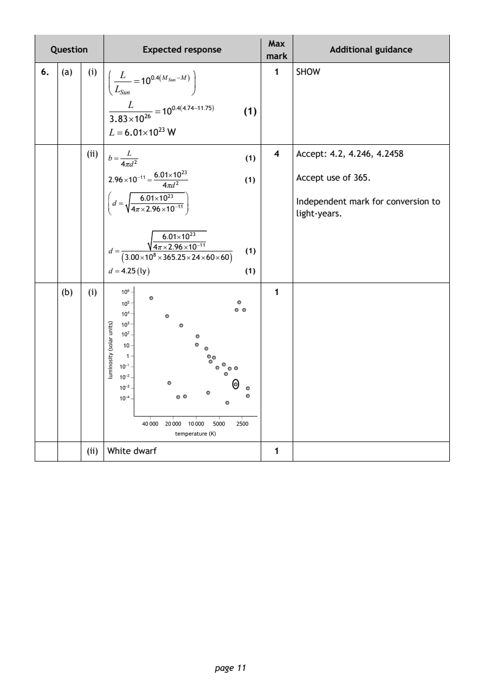
Selectable page text
Max
Question Expected response Additional guidance
mark
6. (a) (i) L 1 SHOW
=10⁰^{.}⁴
(
^{M}
_{S}ᵤₙ−M)
L_{S}ᵤₙ
L
=10⁰^{.}⁴ ( ⁴^{.}74−11.75) (1)
3.83×10²⁶
L=6.01×10²³W
(ii) L 4 Accept: 4.2, 4.246, 4.2458
b= (1)
4πd²
6.01×10²³ Accept use of 365.
2.96×10⁻¹¹= (1)
4πd²
6.01×10²³
d = Independent mark for conversion to
4π×2.96×10⁻¹¹
light-years.
6.01×10²³
4π×2.96×10⁻¹¹
d = (1)
( )
3.00×10⁸×365.25×24×60×60
d =4.25(ly) (1)
(b) (i) 1
(ii) White dwarf 1
page 11PDF page 12
Question 7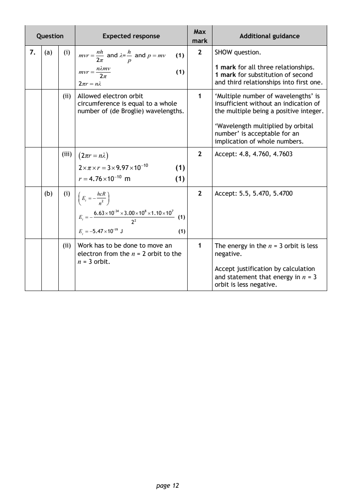
Selectable page text
Max
Question Expected response Additional guidance
mark
7. (a) (i) nh h 2 SHOW question.
mvr = and λ= and p=mv (1)
2π p
nλmv 1 mark for all three relationships.
mvr = (1)
1 mark for substitution of second
2π
2πr =nλ and third relationships into first one.
(ii) Allowed electron orbit 1 ‘Multiple number of wavelengths’ is
circumference is equal to a whole insufficient without an indication of
number of (de Broglie) wavelengths. the multiple being a positive integer.
‘Wavelength multiplied by orbital
number’ is acceptable for an
implication of whole numbers.
(iii) (2πr =nλ) 2 Accept: 4.8, 4.760, 4.7603
2×π×r =3×9.97×10⁻¹⁰ (1)
r =4.76×10⁻¹⁰ m (1)
(b) (i) hcR 2 Accept: 5.5, 5.470, 5.4700
Eₜ =−
n²
6.63×10⁻³⁴×3.00×10⁸×1.10×10⁷
Eₜ =− (1)
2²
Eₜ =−5.47×10⁻¹⁹ J (1)
(ii) Work has to be done to move an 1 The energy in the n = 3 orbit is less
electron from the n = 2 orbit to the negative.
n = 3 orbit.
Accept justification by calculation
and statement that energy in n = 3
orbit is less negative.
page 12PDF page 13
Question 8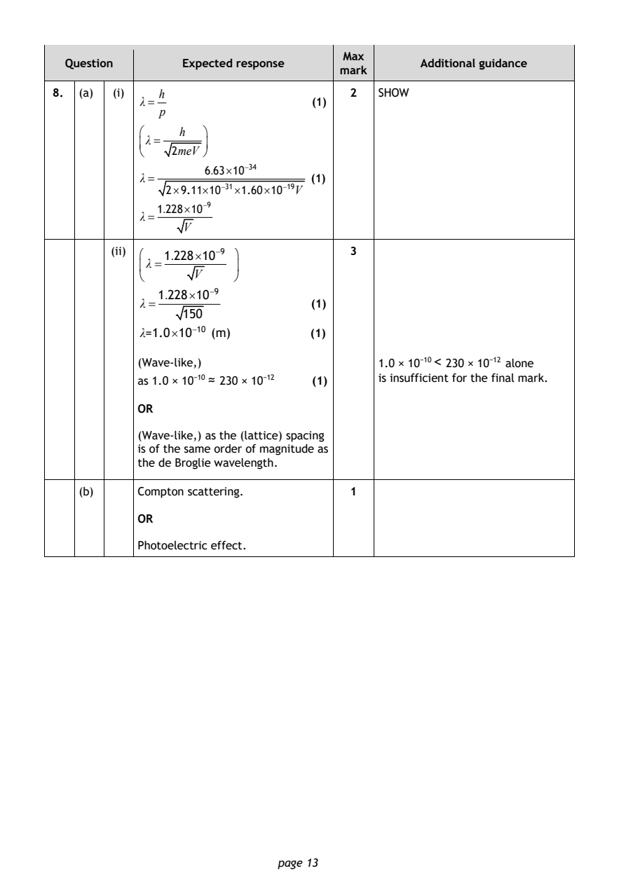
Selectable page text
[StemInteract: this page transcription includes notation repairs checked against the original image. sqrt(...) means square root; ^ denotes a power.]
Max
Question Expected response Additional guidance
mark
8. (a) (i) [2 marks; SHOW]
λ = h/p (1)
λ = h/sqrt(2*m*e*V)
λ = 6.63e-34/sqrt(2*9.11e-31*1.60e-19*V) (1)
λ = 1.228e-9/sqrt(V)
(ii) [3 marks]
λ = 1.228e-9/sqrt(V)
λ = 1.228e-9/sqrt(150) (1)
λ = 1.0e-10 (m) (1)
(Wave-like,) 1.0 × 10⁻¹⁰ < 230 × 10⁻¹² alone
as 1.0 × 10⁻¹⁰ ≈ 230 × 10⁻¹² (1) is insufficient for the final mark.
OR
(Wave-like,) as the (lattice) spacing
is of the same order of magnitude as
the de Broglie wavelength.
(b) Compton scattering. 1
OR
P hotoelectric effect.
page 13PDF page 14
Question 9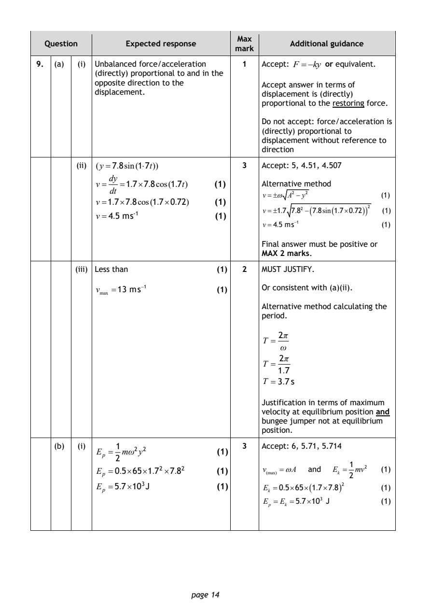
Selectable page text
Max
Question Expected response Additional guidance
mark
9. (a) (i) Unbalanced force/acceleration 1 Accept: F =−ky or equivalent.
(directly) proportional to and in the
opposite direction to the Accept answer in terms of
displacement. displacement is (directly)
proportional to the restoring force.
Do not accept: force/acceleration is
(directly) proportional to
displacement without reference to
direction
(ii) (y=7.8sin(1⋅7t)) 3 Accept: 5, 4.51, 4.507
dy
v= =1.7×7.8cos(1.7t) (1) Alternative method
dt
v=±ω A²−y² (1)
v=1.7×7.8cos(1.7×0.72) (1)
v=±1.7 7.8²−(7.8sin(1.7×0.72))² (1)
v=4.5 ms⁻¹ (1)
v=4.5 ms⁻¹ (1)
Final answer must be positive or
MAX 2 marks.
(iii) Less than (1) 2 MUST JUSTIFY.
vₘₐₓ =13 ms⁻¹ (1) Or consistent with (a)(ii).
Alternative method calculating the
period.
2π
T =
ω
2π
T =
1.7
T =3.7s
Justification in terms of maximum
velocity at equilibrium position and
bungee jumper not at equilibrium
p osition.
(b) (i) 1 3 Accept: 6, 5.71, 5.714
Eₚ = mω²y² (1)
2
1
Eₚ =0.5×65×1.7²×7.8² (1) v₍ₘₐₓ₎ =ωA and Eₖ = mv² (1)
2
Eₚ =5.7×10³J (1) Eₖ =0.5×65×(1.7×7.8)² (1)
Eₚ =Eₖ =5.7×10³ J (1)
page 14PDF page 15
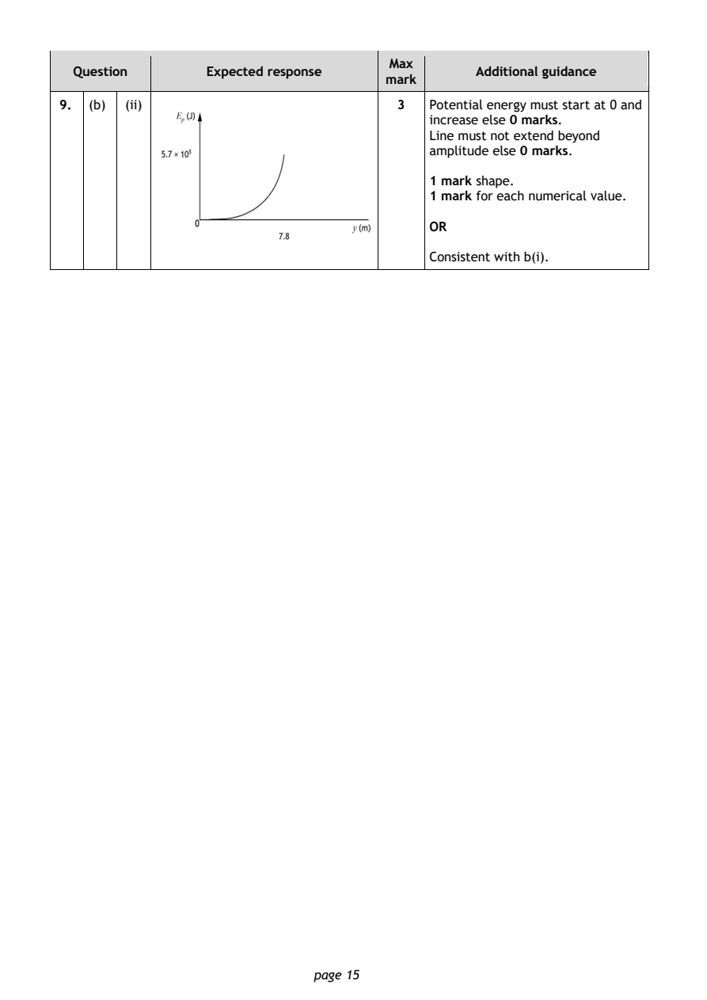
Selectable page text
Max
Question Expected response Additional guidance
mark
9. (b) (ii) 3 Potential energy must start at 0 and
increase else 0 marks.
Line must not extend beyond
amplitude else 0 marks.
1 mark shape.
1 mark for each numerical value.
OR
Consistent with b(i).
page 15PDF page 16
Question 10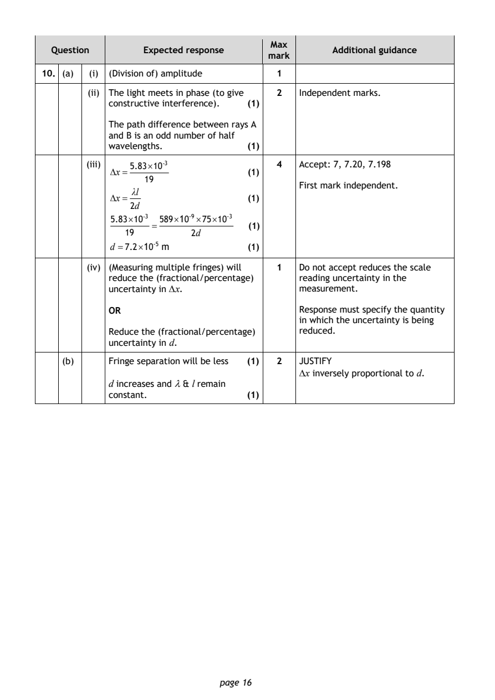
Selectable page text
Max
Question Expected response Additional guidance
mark
10. (a) (i) (Division of) amplitude 1
(ii) The light meets in phase (to give 2 Independent marks.
constructive interference). (1)
The path difference between rays A
and B is an odd number of half
wavelengths. (1)
(iii) 5.83×10⁻³ 4 Accept: 7, 7.20, 7.198
∆x= (1)
19
First mark independent.
λl
∆x= (1)
2d
5.83×10⁻³ 589×10⁻⁹×75×10⁻³
= (1)
19 2d
d =7.2×10⁻⁵ m (1)
(iv) (Measuring multiple fringes) will 1 Do not accept reduces the scale
reduce the (fractional/percentage) reading uncertainty in the
uncertainty in ∆x. measurement.
OR Response must specify the quantity
in which the uncertainty is being
Reduce the (fractional/percentage) r educed.
uncertainty in d.
(b) Fringe separation will be less (1) 2 JUSTIFY
∆x inversely proportional to d.
d increases and λ & l remain
constant. (1)
page 16PDF page 17
Question 11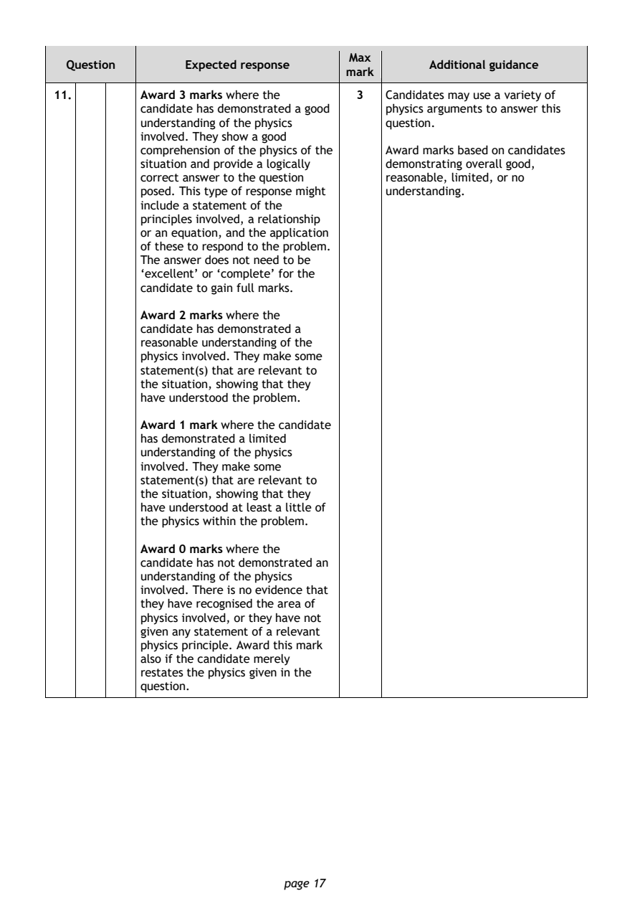
Selectable page text
Max
Question Expected response Additional guidance
mark
11. Award 3 marks where the 3 Candidates may use a variety of
candidate has demonstrated a good physics arguments to answer this
understanding of the physics question.
involved. They show a good
comprehension of the physics of the Award marks based on candidates
situation and provide a logically demonstrating overall good,
correct answer to the question reasonable, limited, or no
posed. This type of response might understanding.
include a statement of the
principles involved, a relationship
or an equation, and the application
of these to respond to the problem.
The answer does not need to be
‘excellent’ or ‘complete’ for the
candidate to gain full marks.
Award 2 marks where the
candidate has demonstrated a
reasonable understanding of the
physics involved. They make some
statement(s) that are relevant to
the situation, showing that they
have understood the problem.
Award 1 mark where the candidate
has demonstrated a limited
understanding of the physics
involved. They make some
statement(s) that are relevant to
the situation, showing that they
have understood at least a little of
the physics within the problem.
Award 0 marks where the
candidate has not demonstrated an
understanding of the physics
involved. There is no evidence that
they have recognised the area of
physics involved, or they have not
given any statement of a relevant
physics principle. Award this mark
also if the candidate merely
restates the physics given in the
question.
page 17PDF page 18
Question 12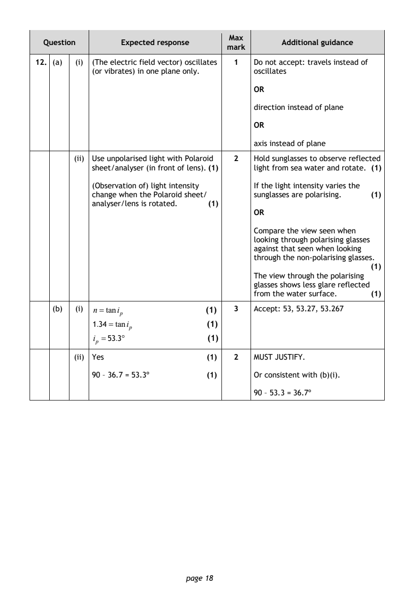
Selectable page text
Max
Question Expected response Additional guidance
mark
12. (a) (i) (The electric field vector) oscillates 1 Do not accept: travels instead of
(or vibrates) in one plane only. oscillates
OR
direction instead of plane
OR
axis instead of plane
(ii) Use unpolarised light with Polaroid 2 Hold sunglasses to observe reflected
sheet/analyser (in front of lens). (1) light from sea water and rotate. (1)
(Observation of) light intensity If the light intensity varies the
change when the Polaroid sheet/ sunglasses are polarising. (1)
analyser/lens is rotated. (1)
OR
Compare the view seen when
looking through polarising glasses
against that seen when looking
through the non-polarising glasses.
N (1)
The view through the polarising
glasses shows less glare reflected
from the water surface. (1)
(b) (i) n=taniₚ (1) 3 Accept: 53, 53.27, 53.267
1.34=taniₚ (1)
iₚ =53.3° (1)
(ii) Yes (1) 2 MUST JUSTIFY.
90 – 36.7 = 53.3º (1) Or consistent with (b)(i).
90 – 53.3 = 36.7º
page 18PDF page 19
Question 13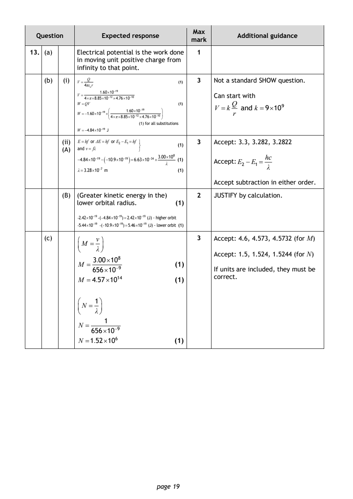
Selectable page text
Max
Question Expected response Additional guidance
mark
13. (a) Electrical potential is the work done 1
in moving unit positive charge from
infinity to that point.
(b) (i) _{V} Q 3 Not a standard SHOW question.
= (1)
4πεₒr
1.60×10⁻¹⁹
V= Can start with
4×π×8.85×10⁻¹²×4.76×10⁻¹⁰
W=QV (1) Q
V =k and k =9×10⁹
W=−1.60×10⁻¹⁹× 1.60×10⁻¹⁹ r
4×π×8.85×10⁻¹²×4.76×10⁻¹⁰
(1) for all substitutions
W=−4.84×10⁻¹⁹ J
(ii) ^{E}=hf or ΔE=hf or E₂−E₁=hf 3 Accept: 3.3, 3.282, 3.2822
(1)
(A) ^{a}nd v=fλ
−4.84×10⁻¹⁹−(−10.9×10⁻¹⁹)=6.63×10⁻³⁴× 3.00×10⁸ (1) Accept:E₂ −E₁= hc
λ
λ
λ=3.28×10⁻⁷ m (1)
Accept subtraction in either order.
(B) (Greater kinetic energy in the) 2 JUSTIFY by calculation.
lower orbital radius. (1)
-2.42×10⁻¹⁹-(-4.84×10⁻¹⁹)=2.42×10⁻¹⁹ (J) - higher orbit
-5.44×10⁻¹⁹ -(-10.9×10⁻¹⁹)=5.46×10⁻¹⁹ (J) - lower orbit (1)
(c) v 3 Accept: 4.6, 4.573, 4.5732 (for M)
M =
λ
Accept: 1.5, 1.524, 1.5244 (for N)
3.00×10⁸
M = (1)
656×10⁻⁹ If units are included, they must be
correct.
M =4.57×10¹⁴ (1)
1
N =
λ
1
N =
656×10⁻⁹
N =1.52×10⁶ (1)
page 19PDF page 20
Question 14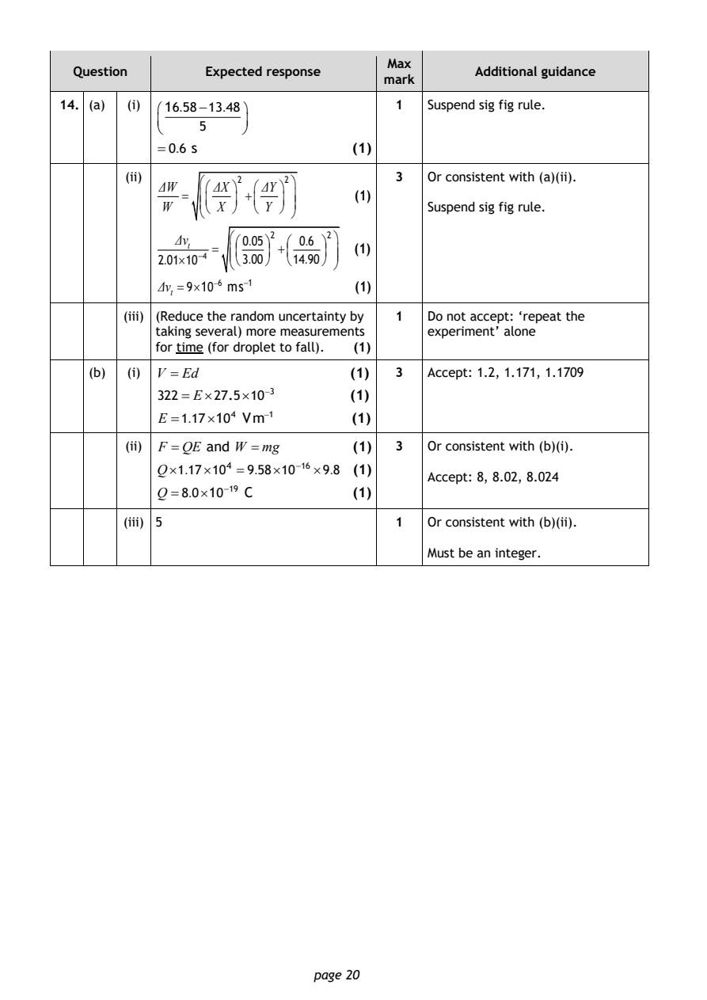
Selectable page text
Max
Question Expected response Additional guidance
mark
14. (a) (i) 16.58−13.48 1 Suspend sig fig rule.
5
=0.6 s (1)
(ii) 3 Or consistent with (a)(ii).
ΔW ΔX ² ΔY ²
= + (1)
W X Y Suspend sig fig rule.
Δvₜ 0.05² 0.6 ²
= + (1)
2.01×10⁻⁴ 3.00 14.90
Δvₜ =9×10⁻⁶ ms⁻¹ (1)
(iii) (Reduce the random uncertainty by 1 Do not accept: ‘repeat the
taking several) more measurements e xperiment’ alone
for time (for droplet to fall). (1)
(b) (i) V = Ed (1) 3 Accept: 1.2, 1.171, 1.1709
322= E×27.5×10⁻³ (1)
E =1.17×10⁴ Vm⁻¹ (1)
(ii) F =QE and W =mg (1) 3 Or consistent with (b)(i).
Q×1.17×10⁴ =9.58×10⁻¹⁶×9.8 (1)
A ccept: 8, 8.02, 8.024
Q=8.0×10⁻¹⁹ C (1)
(iii) 5 1 Or consistent with (b)(ii).
Must be an integer.
page 20PDF page 21
Question 15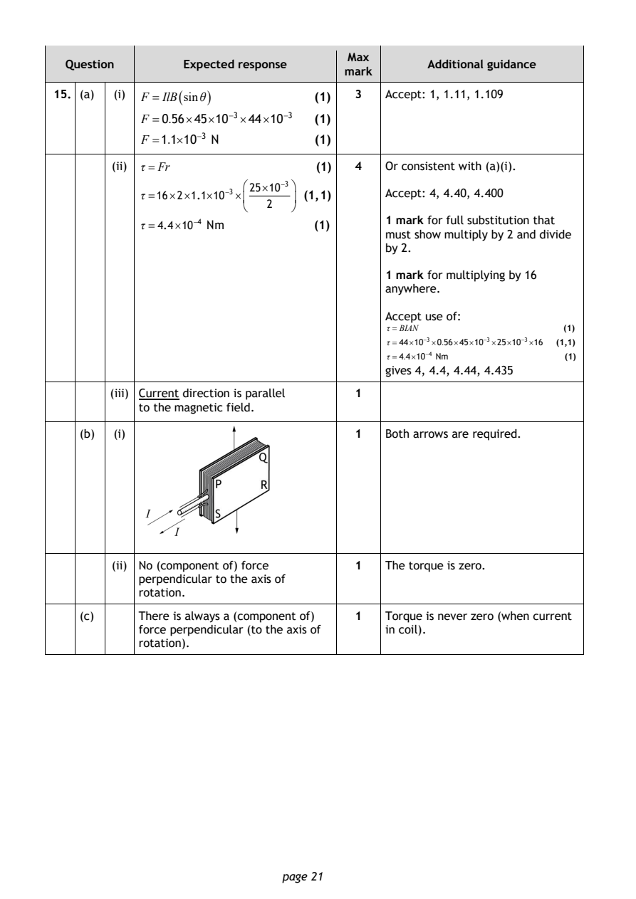
Selectable page text
Max
Question Expected response Additional guidance
mark
15. (a) (i) F =IlB(sinθ) (1) 3 Accept: 1, 1.11, 1.109
F =0.56×45×10⁻³×44×10⁻³ (1)
F =1.1×10⁻³ N (1)
(ii) τ =Fr (1) 4 Or consistent with (a)(i).
25×10⁻³
τ =16×2×1.1×10⁻³×
(1, 1) Accept: 4, 4.40, 4.400
2
1 mark for full substitution that
τ =4.4×10⁻⁴ Nm (1)
must show multiply by 2 and divide
by 2.
1 mark for multiplying by 16
anywhere.
Accept use of:
τ=BIAN (1)
τ=44×10⁻³×0.56×45×10⁻³×25×10⁻³×16 (1,1)
τ=4.4×10⁻⁴ Nm (1)
gives 4, 4.4, 4.44, 4.435
(iii) Current direction is parallel 1
to the magnetic field.
(b) (i) 1 Both arrows are required.
(ii) No (component of) force 1 The torque is zero.
perpendicular to the axis of
r otation.
(c) There is always a (component of) 1 Torque is never zero (when current
force perpendicular (to the axis of in coil).
rotation).
page 21PDF page 22
Question 16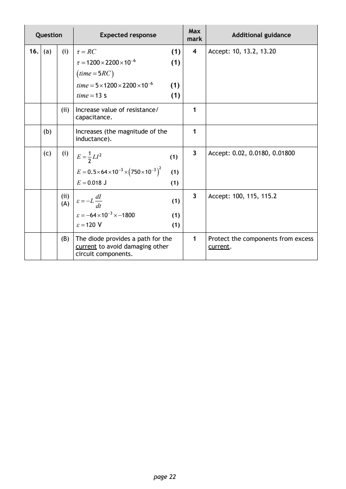
Selectable page text
Max
Question Expected response Additional guidance
mark
16. (a) (i) τ = RC (1) 4 Accept: 10, 13.2, 13.20
τ =1200×2200×10⁻⁶ (1)
(time=5RC)
time=5×1200×2200×10⁻⁶ (1)
time=13 s (1)
(ii) Increase value of resistance/ 1
capacitance.
(b) Increases (the magnitude of the 1
inductance).
(c) (i) 1 3 Accept: 0.02, 0.0180, 0.01800
E = LI² (1)
2
( )
E =0.5×64×10⁻³× 750×10⁻³ ² (1)
E =0.018 J (1)
(ii) dI 3 Accept: 100, 115, 115.2
ε=−L (1)
(A)
dt
ε=−64×10⁻³×−1800 (1)
ε=120 V (1)
(B) The diode provides a path for the 1 Protect the components from excess
current to avoid damaging other current.
circuit components.
page 22PDF page 23
Question 17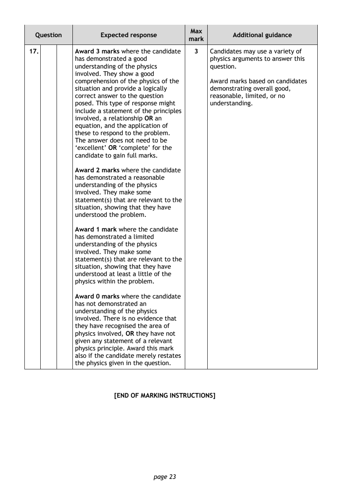
Selectable page text
Max
Question Expected response Additional guidance
mark
17. Award 3 marks where the candidate 3 Candidates may use a variety of
has demonstrated a good physics arguments to answer this
understanding of the physics question.
involved. They show a good
comprehension of the physics of the Award marks based on candidates
situation and provide a logically demonstrating overall good,
correct answer to the question reasonable, limited, or no
posed. This type of response might understanding.
include a statement of the principles
involved, a relationship OR an
equation, and the application of
these to respond to the problem.
The answer does not need to be
‘excellent’ OR ‘complete’ for the
candidate to gain full marks.
Award 2 marks where the candidate
has demonstrated a reasonable
understanding of the physics
involved. They make some
statement(s) that are relevant to the
situation, showing that they have
understood the problem.
Award 1 mark where the candidate
has demonstrated a limited
understanding of the physics
involved. They make some
statement(s) that are relevant to the
situation, showing that they have
understood at least a little of the
physics within the problem.
Award 0 marks where the candidate
has not demonstrated an
understanding of the physics
involved. There is no evidence that
they have recognised the area of
physics involved, OR they have not
given any statement of a relevant
physics principle. Award this mark
also if the candidate merely restates
the physics given in the question.
[END OF MARKING INSTRUCTIONS]
page 23